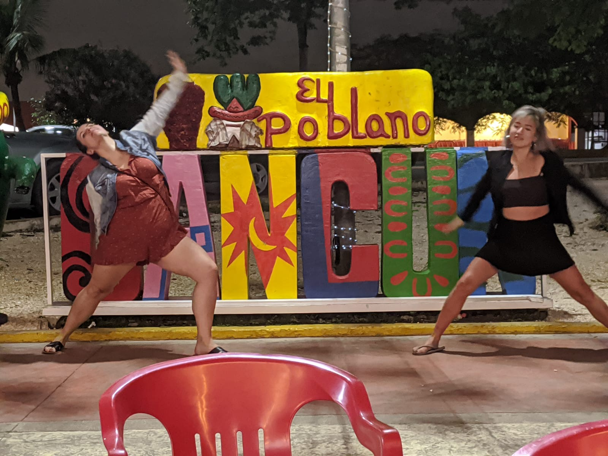

Travel Blog Post
Time Travel in Tulum
I went into this trip having no expectations. After not seeing 2 of my best friends since 2017, there were feelings of uneasiness as I was getting off the plane. However, the heat and humidity from Mexico melted away any negative feelings immediately.
Once I finally found my first best bitch, Amy, I knew that we were in for a good time. We immediately started talking about everything we wanted to do, and laughed about how crazy we were going to get since our first night would be in Tulum. Additionally, it was Tiff's birthday. I was so prepared to kill my liver and made sure I brought all my hangover cures so I could go hard and celebrate with this bitch.
After a 40 minute bus ride, we got to Cancun central. That's when I blacked out and ended up with this picture.
"I was so prepared to kill my liver and made sure I brought all my hangover cures so I could go hard and celebrate with this bitch."
It was the best.
Tags: